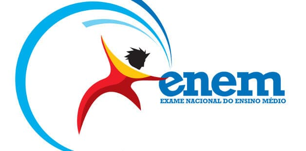

O que é o Enem?
O Enem foi criado em 1998, com o objetivo de avaliar o desempenho dos estudantes concluintes do ensino médio. A partir de 2004, a prova passou a ser utilizada como ferramenta para ingresso em instituições do ensino superior e, em 2010, com sua inclusão no Sistema de Seleção Unificada (Sisu), foi reconhecido como o maior e mais completo exame educacional do Brasil.
Ao longo de sua criação, o Enem acabou substituindo o tradicional vestibular realizado por faculdades e universidades nacionais, tornando-se hoje ferramenta para concessão de bolsas de estudo parciais e integrais em faculdades particulares, através do Programa Universidade Para Todos (Prouni).
E não para por aí. O Enem é também o método utilizado para que estudantes obtenham os financiamentos disponibilizados pelo governo federal: Fundo de Financiamento Estudantil (Fies) e Programa de Financiamento Estudantil (P-Fies). O exame contempla ainda estudantes de cursos técnicos por meio do Sistema de Seleção Unificada da Educação Profissional e Tecnológica (Sisutec). Todos os anos milhares de estudantes realizam a avaliação.
Como acontece a prova do Enem?
Atualmente, as provas do Enem são realizadas em dois domingos consecutivos, com duas aplicações diferentes, uma para modalidade impressa e outra para versão digital. No primeiro dia, os estudantes têm de responder questões de Linguagens, Códigos e suas Tecnologias; Ciências Humanas suas Tecnologias, e fazer a Redação, totalizando 5 horas e 30 minutos.
Já no segundo dia, é a vez dos candidatos testarem seus conhecimentos em conteúdos ligados às Ciências da Natureza e suas Tecnologias, além de Matemática e suas Tecnologias, nessa etapa, o tempo para realização das provas é menor: 5 horas.
O objetivo do nosso site é te ajudar a sair bem em matemática e linguagens, aproveite o conteúdo.